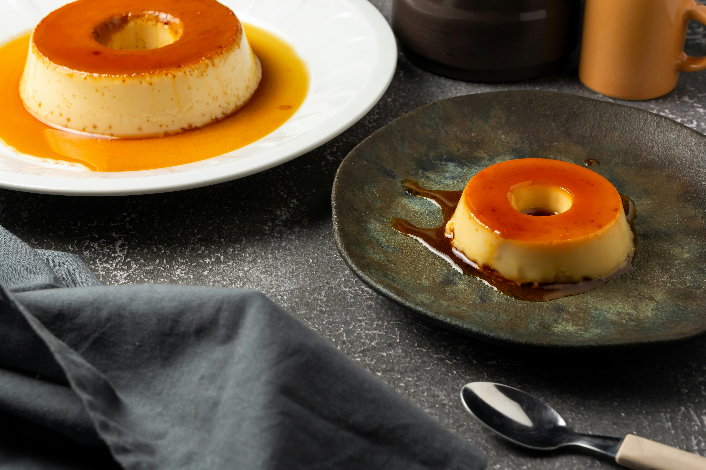

Pudim feito na Air Fryer
Rápido, prático e muito gostoso, do jeito que todo mundo gosta!

Ingredientes:
Pudim:
- 1 lata ou caixa de leite condensado — aproximadamente 395 g
- A mesma medida da embalagem de leite integral, aproximadamente 395 ml
- 3 ovos
Calda:
- ½ xícara de açúcar
- ¼ de xícara de água quente
Modo de preparo:
Fazer a calda:
- Coloque o açúcar em uma panela pequena.
- Leve ao fogo baixo.
- Deixe o açúcar começar a derreter. Quando as bordas começarem a caramelizar, mexa cuidadosamente.
-
Continue até o açúcar virar um caramelo dourado.
Não deixe ficar muito escuro porque pode ficar amargo.
-
Coloque cuidadosamente a água quente.
Vai borbulhar bastante, então mantenha certa distância da panela.
- Continue mexendo em fogo baixo até os pedaços de açúcar derreterem completamente.
- Despeje a calda no fundo da forma de pudim.
- Incline a forma cuidadosamente para espalhar um pouco do caramelo pelas laterais.
Fazer o pudim:
-
Coloque no liquidificador:
- Leite condensado;
- Leite;
- Ovos.
-
Bata por aproximadamente 30 segundos a 1 minuto.
Evite bater por muito tempo se você quiser um pudim mais lisinho e com menos furinhos.
- Despeje a mistura dentro da forma caramelizada.
- Cubra completamente a parte superior da forma com papel-alumínio.
- Preaqueça a Air Fryer a aproximadamente 160 °C por 3 a 5 minutos, se o seu aparelho recomendar preaquecimento.
- Coloque a forma dentro da Air Fryer.
-
Asse a aproximadamente 160 °C
por 30 a 40 minutos.
O tempo varia bastante conforme o tamanho e potência da Air Fryer.
-
Depois de aproximadamente 30 minutos,
abra e faça o teste.
Balance levemente a forma. O centro pode estar levemente tremendo, mas não pode estar líquido.
Você também pode espetar uma faca; ela deve sair praticamente limpa.
- Retire e deixe esfriar completamente.
-
Depois que estiver frio, coloque na geladeira
por pelo menos 4 horas.
O melhor resultado normalmente acontece deixando de um dia para o outro.
- Para desenformar, passe uma faca fina cuidadosamente ao redor da borda.
- Coloque um prato sobre a forma e vire de uma vez.